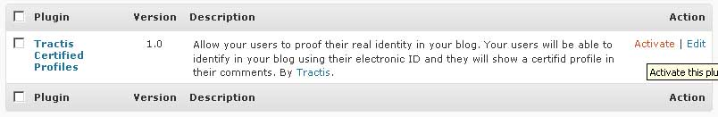

Tractis Identity Verifications Installation
Tractis Identity Verifications Installation
Allow your users to proof their real identity in your blog. Your users will be able to identify in your blog using their electronic ID and they will show their verified identity in their comments.
Upload and Install
- Upload the installation zip file to /path/to/your/blog/wp-content/plugins
- Unzip the file
- Go to Admin Area and click on Plugins
- Find the plugin named Tractis Identity Verifications and click on Activate

- Now you will see the plugin on the list of Currently Active Plugins.
Configure the plugin and get your api key
- Click on Settings from the list of Currently Active Plugins.
- The first things you need is obtain a Tractis API Key, click on Obtain your API Key on Tractis link.
- Follow the steps and copy the API Key
- Insert it in the Tractis API Key textbox
- Select the button that you want
Integrate the plugin in your Wordpress theme
You have two ways of integrate the Tractis button to authenticate the users using electronic ID:
- Using the integrated Widget if your Theme supports it
- In the admin section, go to Appearance/Widgets
- Click Add on Tractis Identity Verifications
- Save the changes
- Insert the next code inside your template
- In the theme editor go to the template that you want to show the button
- Insert the next code: <?php widget_TractisAuth(); ?>
Requeriments
You need php_openssl module working on your php installation in order to comunicate with tractis services in https.
Troubleshooting
Visit the faq.